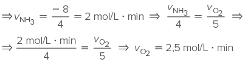

Ao comprar um produto, sempre observe o seu prazo de validade.
zoranm/iStockphoto.com
Como é determinado o prazo de validade de um produto?
Para saber até quando um produto mantém boas condições de consumo, é feita uma análise em laboratório, com pequenas amostras, para avaliar sob que condições e em que velocidade ele se deteriora. Com base nessa avaliação, chamada
de teste de vida de prateleira, é que se determina o prazo de validade de alimentos – remédios e pneus de carro passam por outros testes. A data de validade é um guia não só para quem consome. Saber até quando o produto está
em condições de ser vendido é bom para fabricantes – que evitam ter a imagem manchada por danos causados aos consumidores finais dos seus produtos – e para os distribuidores – que conseguem planejar o ritmo de entrega para
as lojas.
[...]
Amostras dos produtos vão para câmaras que aceleram sua degradação. Em alguns testes o produto é submetido a 10 oC acima da temperatura média do lugar mais quente em que ele é comercializado. Outro teste é fazer a temperatura oscilar
entre quente e frio várias vezes.
[...]
GOMES, Diogo. “Como é determinado o prazo de validade de um produto?”.
Mundo Estranho , 1o jan. 2010. Abril Comunicações S.A. Disponível em: <https://super.abril.com.br/mundo-estranho/como-e-determinado-o-prazo-de-validade-de-um-produto/>. Acesso em: 2 set. 2021.
Qual é a relação da Cinética Química com o prazo de validade dos alimentos?
Quanto tempo leva a decomposição de uma folha de papel pela natureza? E uma garrafa de vidro?
É possível acelerar o processo de degradação do lixo que geramos?
Neste capítulo serão abordadas as habilidades
EM13CNT101
,
EM13CNT201
,
EM13CNT205
e
EM13CNT301
.
Velocidade de consumo, de formação e velocidade média
A velocidade é associada ao quão rápido ou ao quão lento é um evento e, para as reações químicas, não é diferente. A velocidade das reações é calculada com base na quantidade de reagente consumido ou de produto formado em um determinado
período de tempo. Essa quantidade pode ser expressa em concentração, em quantidade de matéria (mol) ou até mesmo em massa:
Por exemplo, no início de uma reação (t 5 0) tem-se 1 mol/L de reagente no meio reacional. Ao final de 5 minutos de reação, constatou-se a presença de 0,2 mol/L desse mesmo reagente. A velocidade de consumo do reagente pode ser
expressa por:
Mas e se for preciso calcular a velocidade de diferentes reagentes na mesma reação? Considere o exemplo seguinte:
Na reação de síntese do óxido de magnésio representada por: 2 Mg 1 O2 ➝ 2 MgO, a proporção estequiométrica é de 2 Mg para 1 O2. Se inicialmente existiam 1,5 mol/L de O2 na reação e após 10 segundos foram medidos 1 mol/L
de O2, é possível calcular a velocidade de consumo do O2 e, por proporção, a do magnésio. Observe:
A cada segundo são consumidos 0,05 mol/L de O2 e 0,1 mol/L de Mg.
Da mesma maneira, pode-se calcular a velocidade de formação dos produtos. Observe o exemplo a seguir.
Se após 5 minutos de uma reação hipotética foi formado 1,2 mols de produto, qual é a velocidade de formação em mol/s? Lembre-se de que 5 minutos são equivalentes a 300 segundos.
Também podemos calcular a velocidade média da reação, dividindo a velocidade de cada componente pelo seu coeficiente estequiométrico. Veja o exemplo:
Na reação de síntese da amônia, representada abaixo, foi observado que a velocidade de consumo de N2 era 0,5 mol/L ? min; a de H2, 1,5 mol/L ? min; e a velocidade de formação do NH3 era 1 mol/L ? min.
Observe que no cálculo de Dq realizado obtivemos um valor negativo.
Valores negativos de velocidade de reação indicam que houve consumo de substância, ou seja, trata-se de um
reagente . Para evitar isso, pode-se adicionar um sinal de negativo na fórmula da velocidade de consumo de reagentes:
, ou fornecer os valores da velocidade em módulo, para sempre serem positivos.
Ao determinar a velocidade de um componente da reação, é possível determinar as velocidades de todos os outros utilizando a
proporção estequiométrica .
Mais
Como fazer PASTA DE DENTE DE ELEFANTE | EXPERIÊNCIA com água oxigenada , Manual do Mundo.
O canal Manual do Mundo demonstra um exemplo de reação muito rápida conhecida como “pasta de dente de elefante”.
A forma como as moléculas dos reagentes interagem determina a velocidade das reações químicas. Para que a reação aconteça, é necessário que haja colisões entre as espécies químicas (moléculas, aglomerados iônicos etc.) reagentes,
porém não é qualquer choque entre elas que irá gerar produto.
De acordo com a teoria das colisões, para que o choque entre as moléculas seja efetivo, é preciso que ocorra com uma certa quantidade de energia, chamada de
energia de ativação , e que a interação entre as moléculas aconteça em uma
orientação geométrica adequada .
Graficamente, a reação química pode ser representada como:
A energia de ativação, Ea, pode ser interpretada como uma barreira energética a ser superada pelos reagentes para que se transformem em produtos. Quanto maior for essa barreira, maior será o tempo que a reação levará para ocorrer.
Se a colisão entre as partículas de reagentes não tiver energia suficiente para atingir a energia de ativação, a reação não ocorrerá. O complexo ativado corresponde a um arranjo específico das moléculas, o qual se transformará
nos produtos ou restabelecerá os reagentes, ou seja, não pode ser classificado como reagente nem como produto.
Denomina-se
choque efetivo a colisão entre as espécies químicas dos reagentes com a energia mínima e a orientação geométrica favorável.
↑ Ea = ↑ tempo da reação
Questão resolvida
1
Unimontes-MG Uma das etapas na produção de ácido nítrico envolve a reação de combustão da amônia, NH3, em temperatura 1 123 K. Dependendo das condições, a combustão da amônia gasosa pode originar, além de água,
os gases monóxido de nitrogênio, NO, ou nitrogênio, N2, como produto principal, conforme representado abaixo.
onsiderando que a variação da concentração do produto principal da reação de maior energia de ativação é igual a 8 mol/L a cada quatro minutos, qual será a velocidade de consumo de oxigênio, O2, em relação à velocidade de formação
do produto principal?
3 mol/L ∙ min
2,5 mol/L ∙ min
2 mol/L ∙ min
4 mol/L ∙ min
Resolução:
Alternativa: B
Com base no enunciado, as reações de combustão podem ser representadas por:
(I) 4 NH3 + 5 O2 ➝ 6 H2O + 4 NO
(II) 4 NH3 + 3 O2 ➝ 6 H2O + 2 N2
De acordo com o gráfico da questão, nota-se que a reação (I) tem energia de ativação maior do que a (II):
A equação química da reação (I) é dada por: 4 NH3 1 5 O2 ➝ 6 H2O 1 4 NO, e a velocidade de consumo do oxigênio pode ser calculada:

Aplicando conhecimentos
1
A reação de decomposição do bicarbonato de sódio gera carbonato de sódio, gás carbônico e água. Considerando, inicialmente, que 200 mL de uma solução contendo 0,6 mol de bicarbonato se decompõe e que, após 1 hora, a concentração
de bicarbonato no meio era de 1 mol/L, qual é a velocidade de consumo do bicarbonato de sódio nessa reação em mol/L ? min?
2
Com base na reação citada no exercício anterior, quais são as velocidades de formação dos produtos?
3
ma reação de neutralização é caracterizada pela presença de uma substância de caráter ácido e outra de caráter básico formando sal e água. A neutralização do hidróxido de alumínio pela ação do ácido sulfúrico está representada
a seguir.
AL(OH)3 + 3 H2SO4 ➝ AL2(SO4)3 + 6 H2O
Qual é a velocidade média em mol/L · s da reação sabendo que durante os 10 primeiros minutos foram consumidos 1,2 mol/L do ácido?
4
Observe as representações gráficas a seguir.
Qual dos gráficos representa a reação mais lenta?
5
Unisc-RS 2016 Considerando que em uma reação hipotética A ➝ B 1 C observou-se a seguinte variação na concentração de A em função do tempo:
A velocidade média (vm) da reação no intervalo de 180 a 300 segundos é
1,66 ∙ 10–4 mol/L ∙ s
3,32 ∙ 10–4 mol/L ∙ s
1,66 ∙ 10–2 mol/L ∙ s
0,83 ∙ 10–2 mol/L ∙ s
0,83 ∙ 10–4 mol/L ∙ s
Consolidando saberes
1
UFJF-MG 2021 Quando o ferro metálico entra em contato com ácido clorídrico (HCℓ), à temperatura constante, reage rapidamente formando o gás hidrogênio (H2), como é indicado pela equação:
2 Fe(s) + 6 HCℓ(aq) ➝ 2 FeCℓ3(aq) + 3 H2(g)
Sabendo-se que em 30 segundos de reação foram consumidos 12 mol de HCℓ, qual o número de mols do gás hidrogênio (H2) produzidos em 5 minutos?
60 mol
30 mol
6 mol
18 mol
11 mol
2
Unicamp-SP 2018 (Adapt.) Graças a sua alta conversão energética e à baixa geração de resíduos, o gás hidrogênio é considerado um excelente combustível. Sua obtenção a partir da fermentação anaeróbia de biomassas como
bagaço de cana, glicerol, madeira e resíduos do processamento da mandioca, abundantes e de baixo custo, parece ser uma boa alternativa tecnológica para o Brasil. A velocidade da fermentação, bem como os diferentes produtos
formados e suas respectivas quantidades, dependem principalmente do tipo de substrato e do tipo de microrganismo que promove a fermentação. As equações e a figura a seguir ilustram aspectos de uma fermentação de 1 litro
de solução de glicose efetuada pela bactéria
Clostridium butyricum .
Equação 1:
C6H12O6(aq) + 2 H2O(L) ➝
➝ 2 CH3COOH(aq) + 4 H2(g) + 2 CO2(g)
Equação 2:
C6H12O6(aq) + 2 H2O(L) ➝
CH3CH2CH2COOH(aq) +2 H2(g) 1 2 CO2(g)
Levando em conta as informações presentes no texto e na figura, e considerando que a fermentação tenha ocorrido, concomitantemente, pelas duas reações indicadas, qual ácido estava presente em maior concentração (mol/L) ao final
da fermentação, o butanoico ou o etanoico? Justifique sua resposta.
Dados: massa molar da glicose: 180 g/mol; volume molar do hidrogênio: 25 L/mol.
3
USCS-SP 2016 Um estudo para verificar o efeito da cinética de degradação e o tempo de prateleira de um suco de manga analisou a velocidade de decomposição da vitamina C em três temperaturas diferentes: 25 °C, 35 °C e
45 °C. O gráfico mostra o resultado da análise.
(www.redalyc.org)
O estudo considerou o tempo de prateleira como sendo o tempo de meia-vida da concentração de vitamina C.
Determine, utilizando o gráfico acima, o tempo de prateleira aproximado para um suco de manga armazenado a uma temperatura de 35 °C.
Para o experimento cuja velocidade de degradação foi maior, calcule a velocidade média de degradação da vitamina C, em mg/L ∙ dia, nos primeiros 60 dias.
4
Unicamp-SP 2021 Um estudo recente avaliou como determinados plásticos se degradam na água do mar quando expostos à luz ultravioleta. Os plásticos estudados foram: NPG (plásticos diversos do Giro do Pacífico Norte), EPS
(poliestireno expandido), PP (polipropileno) e PE (polietileno). Considerando que somente 2% do plástico despejado no mar está à deriva, esse estudo tentou descobrir para onde vão os microplásticos no ambiente marinho.
Um dos resultados do estudo é mostrado nos gráficos abaixo. Nesses gráficos, observam-se as produções de carbono orgânico dissolvido (DOC) por grama de carbono na amostra de plástico utilizado. O DOC foi identificado como
o maior subproduto da fotodegradação de plásticos.
Os resultados mostram que
para os quatro plásticos, a velocidade de degradação aumenta com o tempo de exposição; após 50 dias, a maior degradação foi a do PP.
para três plásticos, a velocidade de degradação aumenta com o tempo de exposição; após 50 dias, a maior degradação foi a do EPS.
para apenas um plástico, a velocidade de degradação não aumenta com o tempo de exposição; após 50 dias, a maior degradação foi a do PP.
duas velocidades de degradação aumentam com o tempo e duas permanecem constantes; após 50 dias, a maior degradação foi a do EPS.
superação
Fuvest-SP 2020 Os movimentos das moléculas antes e depois de uma reação química obedecem aos princípios físicos de colisões. Para tanto, cada átomo é representado como um corpo pontual com uma certa massa, ocupando uma
posição no espaço e com uma determinada velocidade (representada na forma vetorial). Costumeiramente, os corpos pontuais são representados como esferas com diâmetros proporcionais à massa atômica. As colisões ocorrem conservando
a quantidade de movimento. Considerando um referencial no qual as moléculas neutras encontram-se paradas antes e após a colisão, a alternativa que melhor representa o arranjo de íons e moléculas instantes antes e instantes
depois de uma colisão que leva à reação: F– + CH3ℓCL ➝ CH3F + Cℓ– é
Note e adote: Massas atômicas: H = 1 u.m.a., C= 12 u.m.a., F = 19 u.m.a. e Cℓ = 35 u.m.a.
Considere que apenas o isótopo de cloro Cℓ = 35 u.m.a. participa da reação.